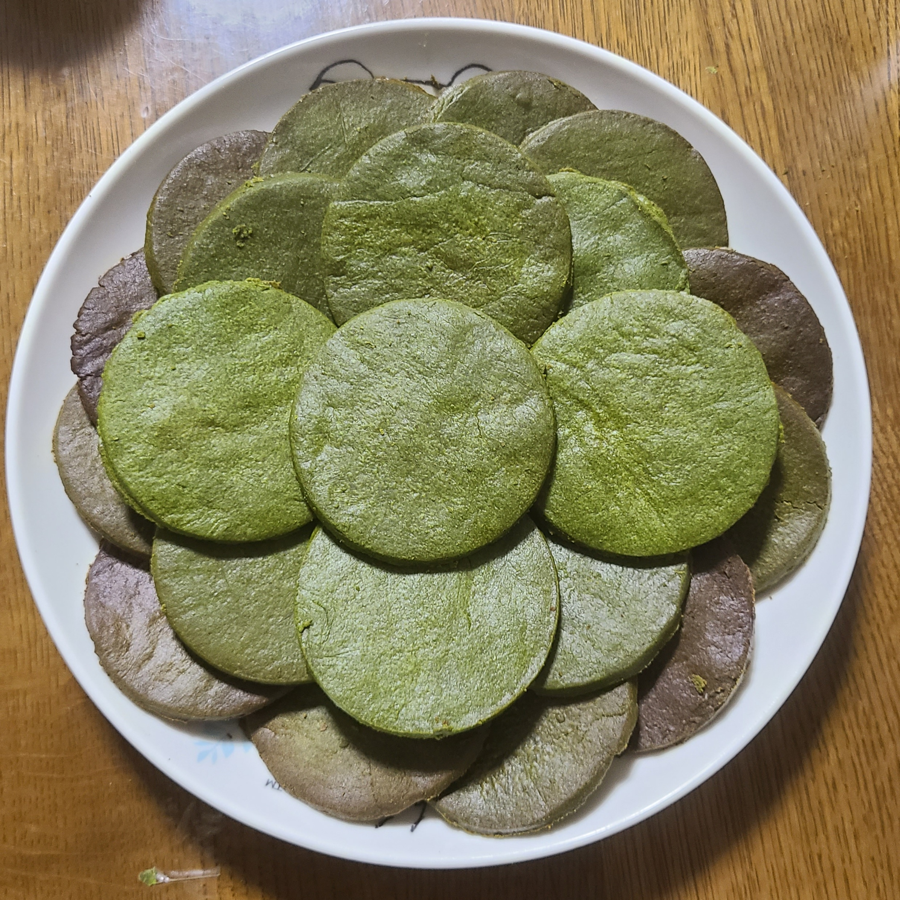

抹茶
このページでは私の好きな食べ物？である抹茶について語ります！

出典：日本の抹茶の起源は西暦10世紀！抹茶の歴史をわかりやすく解説 _ 京都宇治 茶游堂 公式オンラインショップ｜抹茶スイーツ販売（URL）
皆さん、抹茶は好きですか？
私は世界一好きです！！！
苦みの中にある茶葉の甘味とうまみがとてつもなくおいしい！
なにより甘いものが苦手な私でもおいしいスイーツが多い！
と、いった理由で抹茶が大好きな私はごくまれにするお菓子作りでも絶対に抹茶味を作ってしまいます。

この写真はその一つである抹茶クッキーなのですが……。
これ、とんでもない失敗作なんですよね。
普通にレシピを見ながら作っていたのですが、一部だけ抹茶の量が一桁多く記載されていました。
勿論、それに気づかず作ってしまい、無事？に完成してしまいました。
そんなクッキーを一口食べての私の感想は、
「これ、うますぎん？！？！！」でした。
その後、親の味見で無事に分量が多いことに気づきました。
……が、とてもおいしかったのでオールオッケー（ということにしました）！ （その後、ばっちり一人で平らげました。）